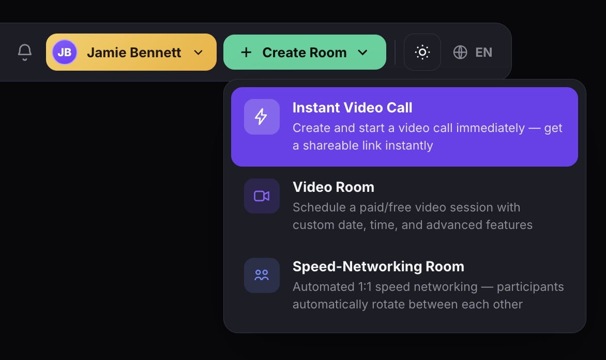
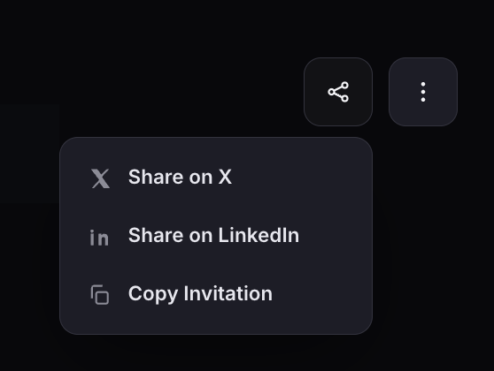
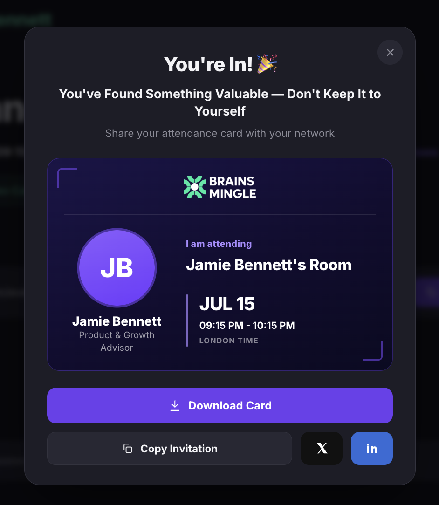

Start an instant drop-in call
Instant drop-in calls are unscheduled video calls that start immediately. Use them for quick team check-ins, impromptu office hours, or ad-hoc conversations. Share the room link, invite participants, and join the session in one click.
Before you get started
- You must have an Admin, Moderator, or Expert role to start instant calls.
- Instant calls are not listed on the sessions page. Members can only join via a direct link shared by the host.
Start an instant call
- Click + Create Room in the top navigation bar.
- Select Instant Video Call.
- The call is created instantly and the room page opens.

View the room page
The room page shows the host profile, room title, scheduled date and time, and session badges (Auto-Approvals, Video Call, Not Listed). Below the title you can download the Attendance Card or View form responses if a registration form was attached. A Co-hosts section lets you add co-hosts to the session.
The share bar displays the room link with Copy and Invite buttons. Click Join Session to enter the call as the host. The About this Room section contains tabs for Recordings, Discussions, Members, and Polls.

Share and invite
- Click Copy in the share bar to copy the room link to your clipboard.
- Click Invite to send the link via email directly from BrainsMingle.
- Click the share icon in the top-right corner to open sharing options: Share on X, Share on LinkedIn, or Copy Invitation.

When participants join, they see a You're In! confirmation with a branded attendance card they can download and share on X or LinkedIn.
